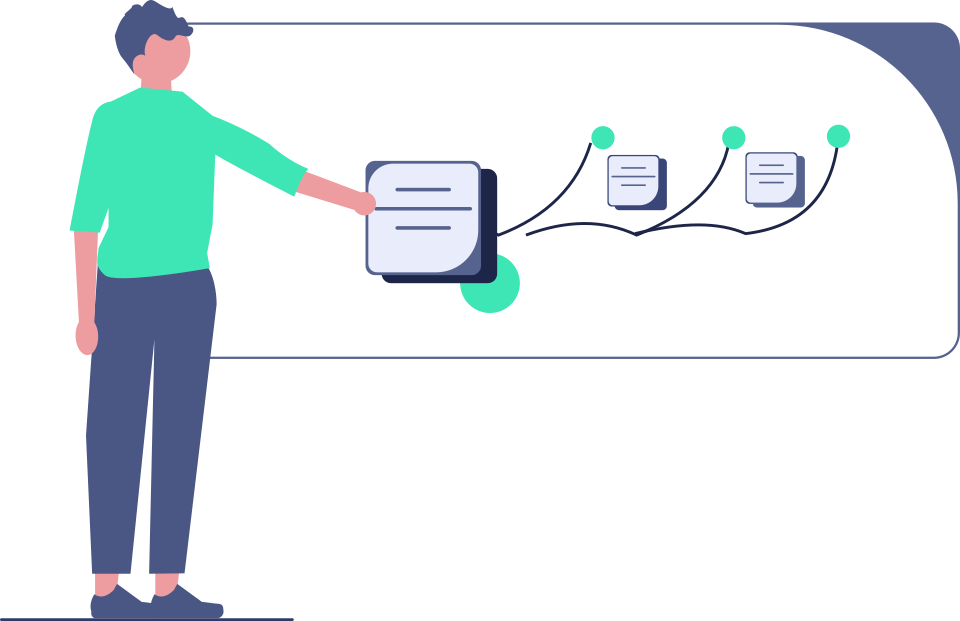
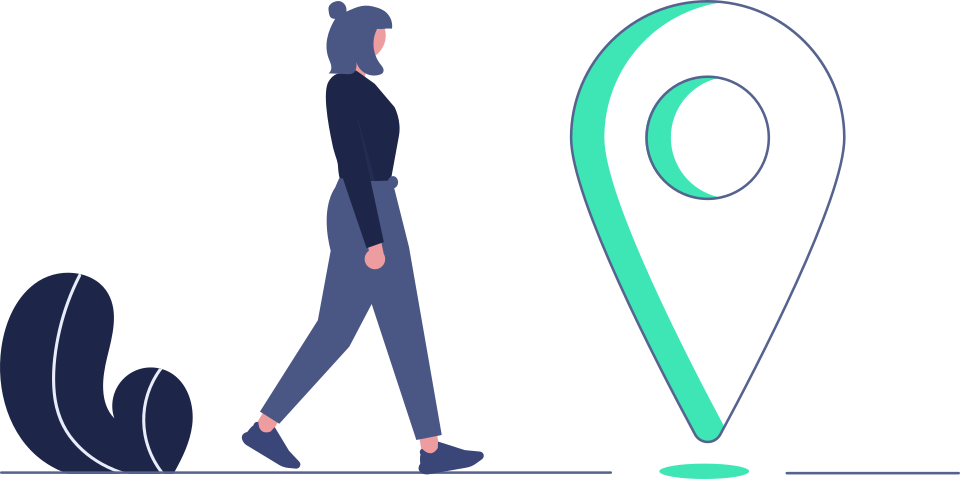
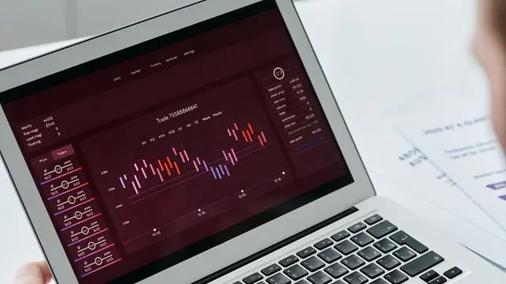
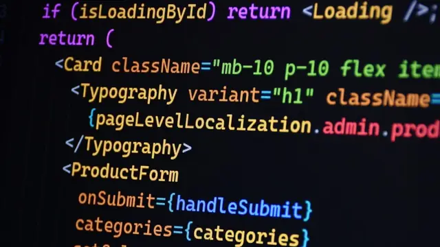
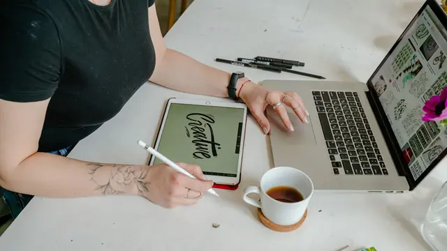
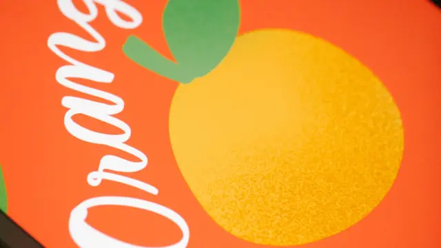
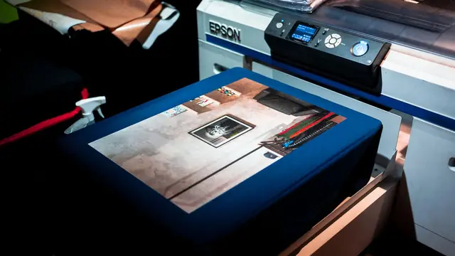

Київський професійний ліцей транспорту ↗
Інформатика, яка знадобиться в професії
Короткі конспекти, ключові поняття, корисні ресурси й інструменти до кожної теми, інтерактивні вправи та тести. Обери розділ, який зараз вивчає твоя група.

МШ
Викладач інформатикиШутько Максим ОлександровичКиївський професійний ліцей транспорту ↗
11розділів
105тем
18інтерактивів
/
🛡️ Порада дня з кібербезпеки
Довгий пароль сильніший за «складний»
Фразу з 4–5 слів, наприклад «синій-трамвай-їде-на-Поділ», зламати значно важче, ніж короткий «P@ss1». Довжина важить більше за спецсимволи.
Як вчитися з сайтом

1 Обери розділТой, який зараз вивчає твоя група — порядок у групах різний.2 Читай і дивисьКороткий конспект, ключові поняття, презентація й корисні ресурси.
 3 Повторюй картками10 випадкових понять — і одразу видно, що варто повторити.
3 Повторюй картками10 випадкових понять — і одразу видно, що варто повторити. 4 Здавай роботиПосилання на роботу або відповідь — через форму, без реєстрації.
4 Здавай роботиПосилання на роботу або відповідь — через форму, без реєстрації.Розділи курсу
у кожної групи свій порядок
🌐РОЗДІЛ 01
Інформаційні технології в суспільстві
Як інформація стала головним ресурсом суспільства, які інформаційні системи нас оточують, як безпечно навчатися й працювати в цифровому світі та що таке штучний інтелект.
12 тем6 з матеріалами

📊РОЗДІЛ 02 Моделі та моделювання. Аналіз та візуалізація даних Як за допомогою моделей вивчати об’єкти й процеси, рахувати статистичні характеристики та перетворювати таблиці чисел на зрозумілі діаграми й інфографіку. 5 тем4 з матеріалами 🗄️РОЗДІЛ 03 Системи керування базами даних Як влаштовані бази даних, чому таблиці зв’язують між собою та як у СКБД Microsoft Access створювати таблиці, форми, шукати й фільтрувати записи. 9 тем
🖥️РОЗДІЛ 04 Мультимедійні та гіпертекстові документи Як опрацьовують звук, відео й зображення, як створюють сайти — від конструктора WordPress до мови HTML — і як зробити сайт зручним та помітним у пошуку. 10 тем
🎨РОЗДІЛ 05 Графічний дизайн як засіб візуальної комунікації Звідки взявся графічний дизайн, як працюють реклама й фірмовий стиль, як підібрати шрифти та створити інфографіку і власне портфоліо. 10 тем
✒️РОЗДІЛ 06 Векторна графіка Чим векторне зображення відрізняється від растрового, які програми для нього є та як в Adobe Illustrator малювати й редагувати об’єкти. 7 тем 🖼️РОЗДІЛ 07 Растрова графіка Як влаштоване растрове зображення, які програми й онлайн-сервіси для нього є та як в Adobe Photoshop змінювати розмір, колір, робити колажі й банери. 9 тем
🖨️РОЗДІЛ 08 Графічний дизайн у поліграфії Як готують до друку листівки, буклети та багатосторінкові документи: програми верстки, робота з текстом і зображеннями, композиція та єдність стилю. 12 тем2 з матеріалами 🎞️РОЗДІЛ 09 Основи анімації та відео Які бувають види анімації, чим растрова анімація відрізняється від векторної, що таке 3D-моделювання і як змонтувати власне відео для соцмереж. 9 тем2 з матеріалами 🛡️РОЗДІЛ 10 Забезпечення безпеки комп’ютерних систем та мереж Які загрози існують для комп’ютерів і мереж, як захистити персональні дані, що таке ботнети, DDoS, VPN, антивіруси та міжнародні стандарти інформаційної безпеки. 11 тем5 з матеріалами 📑РОЗДІЛ 11 Основи електронного документообігу Що таке документ і його реквізити, як правильно оформлювати ділові папери й листи, як працюють електронні документи, системи документообігу та електронний підпис. 11 тем